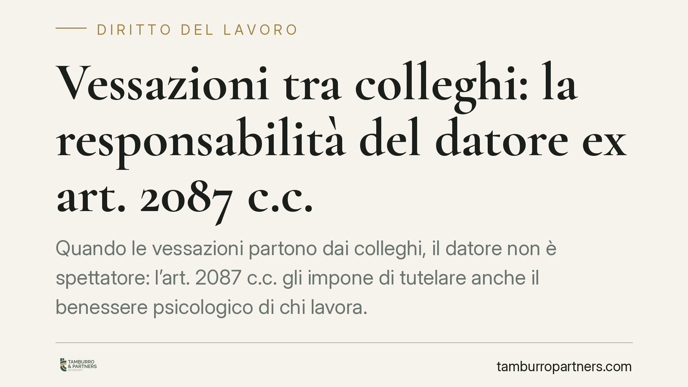

Vessazioni tra colleghi: la responsabilità del datore ex art. 2087 c.c.
Quando le vessazioni partono dai colleghi, il datore non è spettatore: l'art. 2087 c.c. gli impone di tutelare anche il benessere psicologico di chi lavora. La giurisprudenza di legittimità ha più volte affermato che l'inerzia davanti a condotte conoscibili può fondare una responsabilità risarcitoria. Vediamo i presupposti, il riparto dell'onere probatorio e i riflessi sul licenziamento per superamento del comporto.

Il fatto e il quadro di riferimento
Il tema delle vessazioni sul luogo di lavoro torna con regolarità davanti alla Sezione Lavoro della Cassazione. Il nodo giuridico è sempre lo stesso: il datore di lavoro risponde dei danni subiti dal dipendente anche quando le condotte provengono da altri colleghi, e non direttamente da lui.
La risposta è affermativa, a determinate condizioni. Prima di richiamare dati quantitativi di singole pronunce, è bene chiarire l'orientamento di fondo, che è consolidato e indipendente dal numero del provvedimento di turno.
Inquadramento normativo
Il perno è l'art. 2087 del codice civile: l'imprenditore deve adottare, nell'esercizio dell'impresa, le misure necessarie a tutelare «l'integrità fisica e la personalità morale» dei prestatori di lavoro. È una cosiddetta *norma di chiusura*: impone un obbligo di sicurezza che non si esaurisce negli adempimenti tipizzati (antinfortunistica, prevenzione), ma si estende alla protezione del benessere psicologico del lavoratore.
Da qui discende che il datore deve attivarsi anche contro condotte vessatorie orizzontali, cioè tra colleghi, quando ne ha o ne può avere conoscenza. L'inerzia diventa essa stessa inadempimento.
La responsabilità ha natura contrattuale: opera quindi il meccanismo dell'art. 1218 c.c., con le conseguenze che vedremo sul piano della prova.
Mobbing e straining: due figure, un'unica tutela
La distinzione è utile ma non decisiva per l'esito.
- Mobbing: una serie di condotte ostili, ripetute e sistematiche, protratte nel tempo e unificate da un intento persecutorio verso il lavoratore.
- Straining: una situazione di stress forzato, anche derivante da singole azioni o da un ambiente degradato in modo durevole, senza la necessaria reiterazione tipica del mobbing.
Il punto è che, anche in assenza dei requisiti stringenti del mobbing, il datore può rispondere ex art. 2087 c.c. quando l'ambiente di lavoro risulta lesivo della salute. La tutela, insomma, non dipende dall'etichetta.
Il riparto dell'onere della prova
Qui sta il cuore della questione, spesso trascurato.
Trattandosi di responsabilità contrattuale, il lavoratore deve allegare e provare:
- le condotte vessatorie o l'ambiente lesivo;
- il danno alla salute (di norma con documentazione medica e, se necessario, consulenza tecnica);
- il nesso causale tra l'uno e l'altro.
Spetta invece al datore dimostrare di avere adottato tutte le misure esigibili per prevenire e far cessare le condotte, cioè di avere tenuto un comportamento diligente ex art. 2087 c.c. Non basta dichiarare di non aver partecipato alle vessazioni: occorre provare di essere intervenuto una volta che la situazione era conoscibile.
Il criterio della conoscibilità
L'obbligo di intervenire scatta quando le vessazioni sono conosciute o conoscibili con l'ordinaria diligenza organizzativa. Segnalazioni dei lavoratori, assenze anomale, procedimenti disciplinari incrociati, un clima di reparto notoriamente ostile: sono tutti elementi che fanno sorgere l'obbligo di attivarsi.
Il limite è ragionevole: al datore non si chiede un controllo capillare e onnisciente, ma una reazione adeguata quando i segnali sono percepibili. L'inerzia protratta pesa in sede di quantificazione del danno, soprattutto se le vessazioni durano anni.
Il riflesso sul licenziamento per comporto
Un profilo pratico rilevante riguarda il licenziamento per superamento del periodo di comporto (il periodo massimo di assenza per malattia tollerato dalla legge o dal contratto).
Secondo un orientamento di legittimità, se le assenze derivano proprio dalla malattia causata dall'inadempimento del datore agli obblighi dell'art. 2087 c.c., quelle assenze non possono essere computate a danno del lavoratore per far maturare il comporto. In caso contrario, il datore trarrebbe vantaggio dalla propria violazione. Un licenziamento fondato su tali assenze può quindi risultare illegittimo.
Si tratta di una valutazione da compiere caso per caso, sul nesso tra inadempimento, malattia e assenze.
Cosa fare in concreto
Per le aziende:
- Predisponete canali di segnalazione interni e procedure di intervento documentate.
- Reagite tempestivamente ai segnali di conflitto, verbalizzando le azioni adottate.
- Conservate la prova della diligenza: formazione, verifiche, provvedimenti.
Per i lavoratori:
- Documentate le condotte (date, testimoni, comunicazioni) e rivolgetevi tempestivamente al medico.
- Formalizzate per iscritto le segnalazioni al datore, conservandone ricevuta.
Nota di metodo
I dati economici di singole pronunce circolano spesso in forma non verificata. Consigliamo di valutare sempre la propria posizione sui principi consolidati e sulla documentazione concreta, prima che sul numero di una specifica ordinanza.
---
Contributo informativo a cura di Tamburro & Partners - Avv. Giuseppe Tamburro. Non costituisce parere legale.
Ogni storia di lavoro ha i suoi tempi.
Se gestisci HR e vuoi un confronto su contenzioso, ispezioni o licenziamenti, scrivi allo studio. Ti rispondiamo entro un giorno lavorativo.